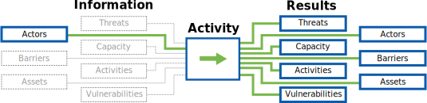

Developed with ❤ by

Information Innovation Lab
Applied research and development of public interest technology.
In this component the auditor engages with staff through interviews and conversations to identify the organization's strengths and weakness (expertise, finance, willingness to learn, staff time, etc.) to adopting new digital and physical security practices. The auditor uses this information to modify the audit scope and recommendations accordingly.
Knowing an organization's strengths and weaknesses allows the auditor to provide more tailored recommendations that an organization will be more likely to attempt and achieve. The auditor will use this assessment in preparing for the audit itself as well as when evaluating the difficulty of a recommendation. This information also provides a starting place for understanding the organization's current use and understanding of technology, digital security, and current threat landscape, as well as revealing elements of an organization's workflow, infrastructure and even vulnerabilities that you might otherwise have overlooked.

Questionnaire: Context Analysis Questionnaire - pg. 76 - Workbook on Security (Front Line Defenders)
Guide: Assessing Context, Priorities and Learning Styles (Integrated Security)
Project: Tech Scape (the engine room)
Guide: Individual Depth Interviews: Design Research for media development (Internews)
Guide: Develop an Interview approach - pg. 58 - HCD Toolkit (IDEO)
Guide: Interview Guide - pg. 57 - Development Impact & You (IDEO.org)
Guide: Conducting key informant Interviews - 1996, Number 2 (USAD Center for Development Information and Evaluation)
Questionnaire: Context Analysis Questionnaire - pg. 76 - Workbook on Security (Front Line Defenders)
Guide: Assessing Context, Priorities and Learning Styles (Integrated Security)
Applied research and development of public interest technology.